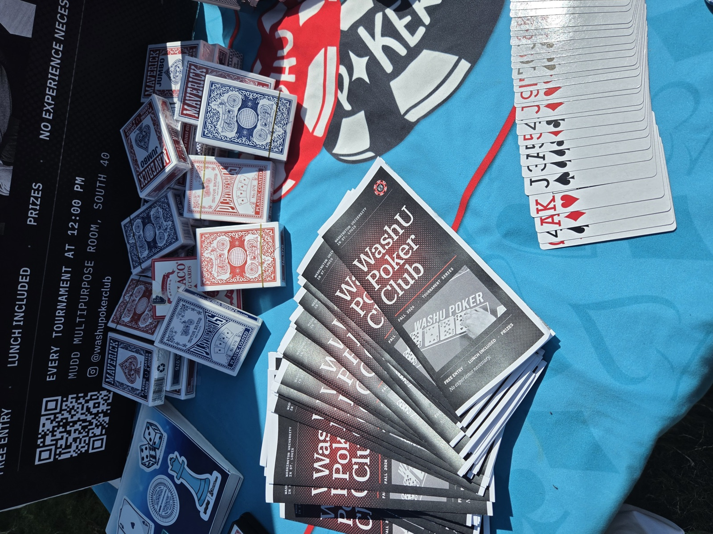
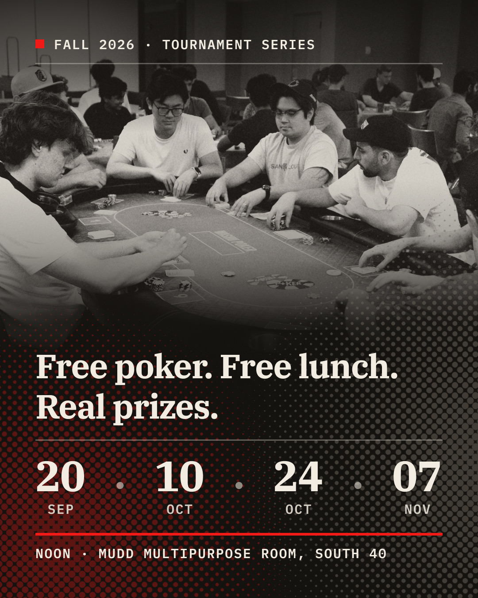
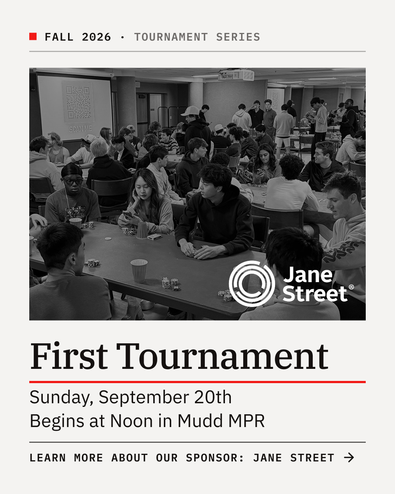
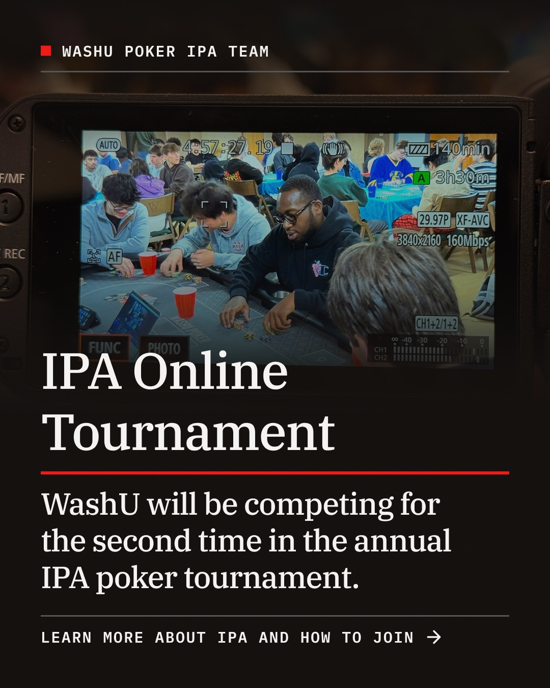
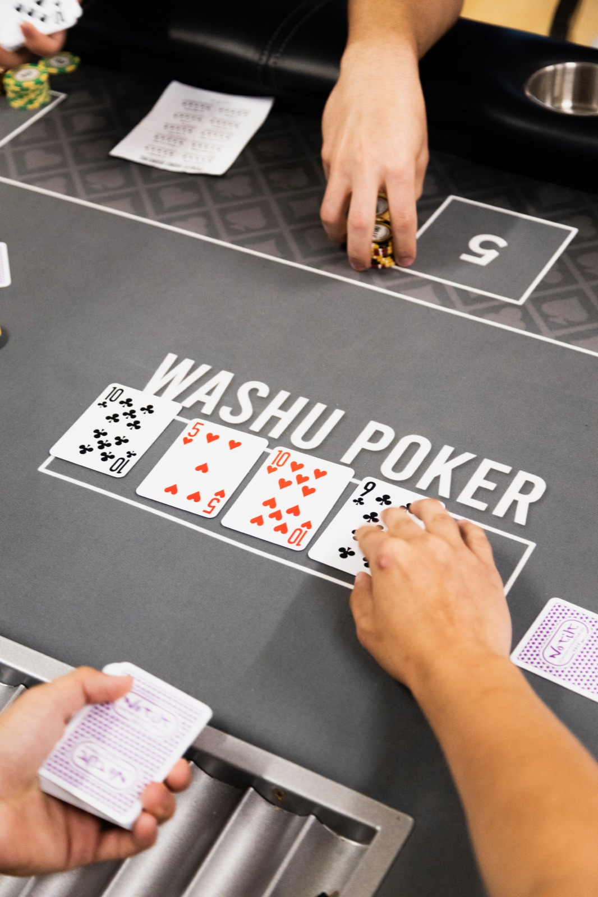
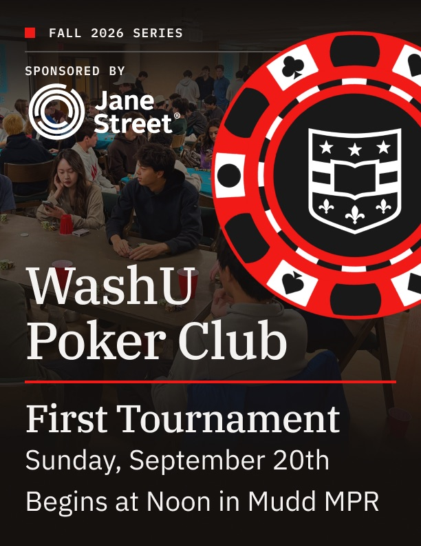
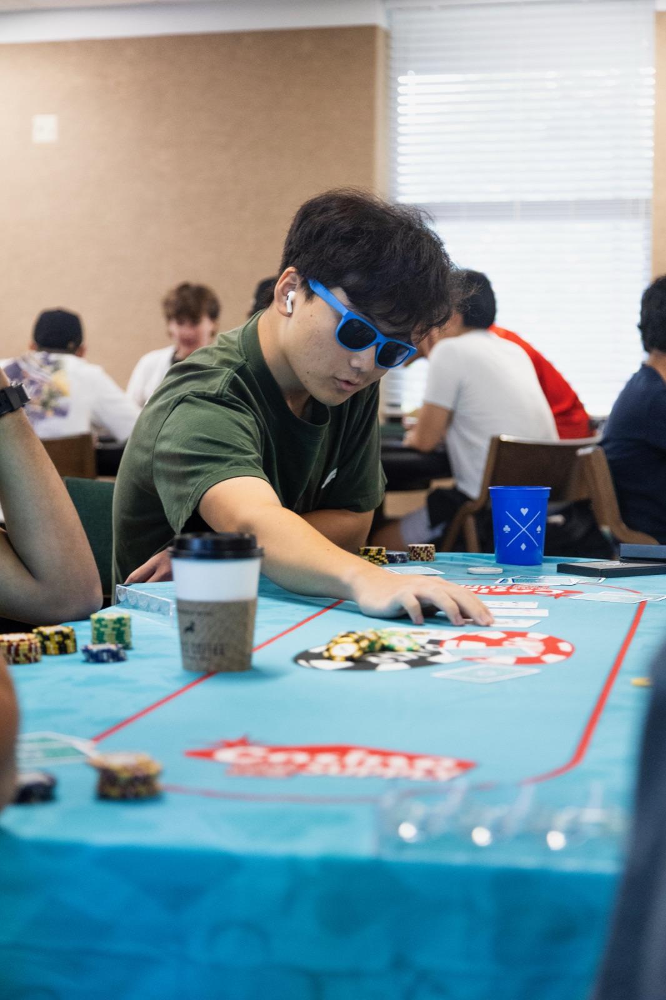
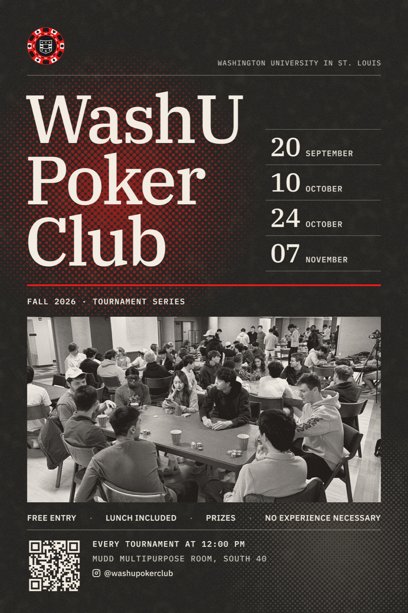
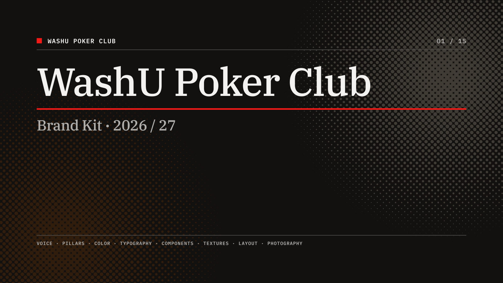

WashU Poker Club
- Canva
- Photoshop
- Digital Camera
The WashU Poker Club is Washington University’s student-run poker organization, with a competitive team in the Intercollegiate Poker Association and a tournament series open to any student. It had a name and a room, but it needed an identity that could recruit, sponsor, and run events with the same voice.
Over an academic year I built that voice from the mark outward: a print and digital tournament series, an Instagram presence that introduces the board and explains the IPA to newcomers, photography from the table, and a brand guide so the next board can keep it consistent without a designer on hand.



Tournament series
Every tournament announcement shares one skeleton: an ink ground, a single red accent, a halftone photograph from a previous game, and the dates set large enough to read from across a room. Holding the structure constant means a new date, sponsor, or venue drops in without the need to redesign.




